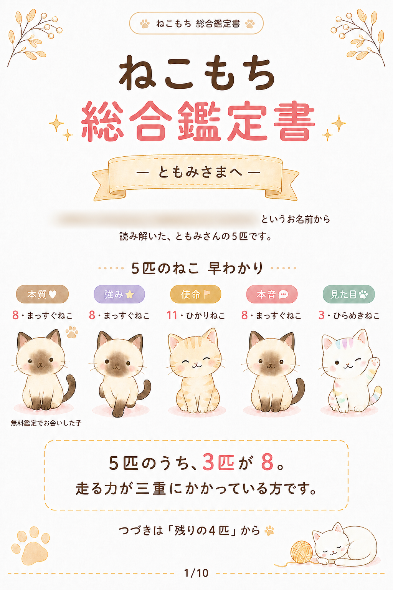
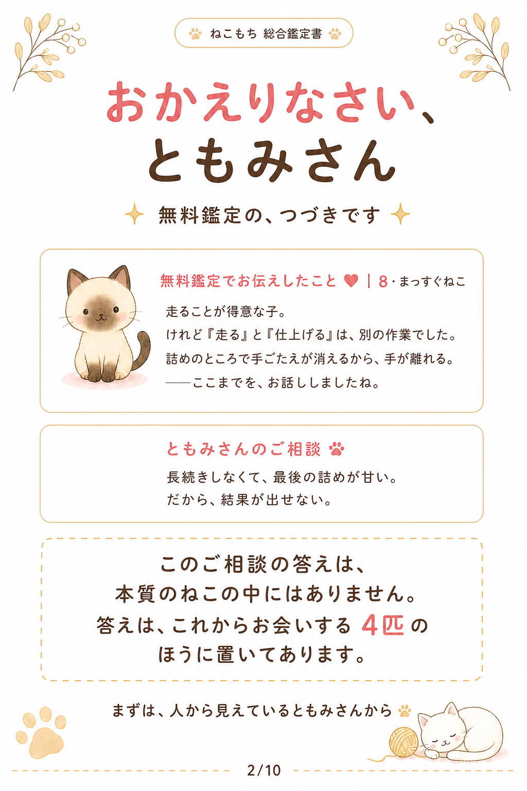
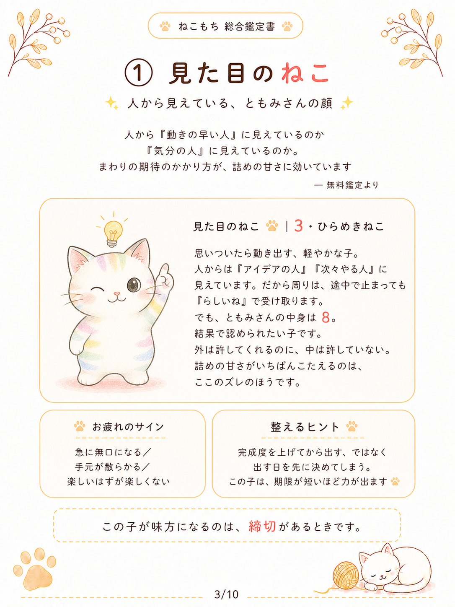
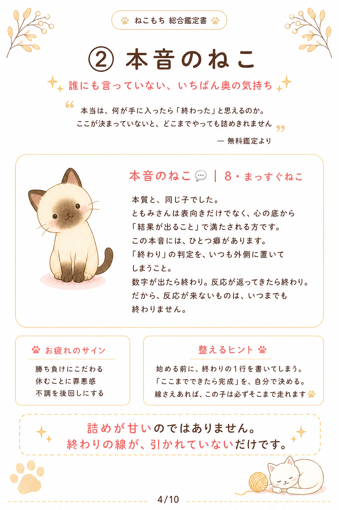
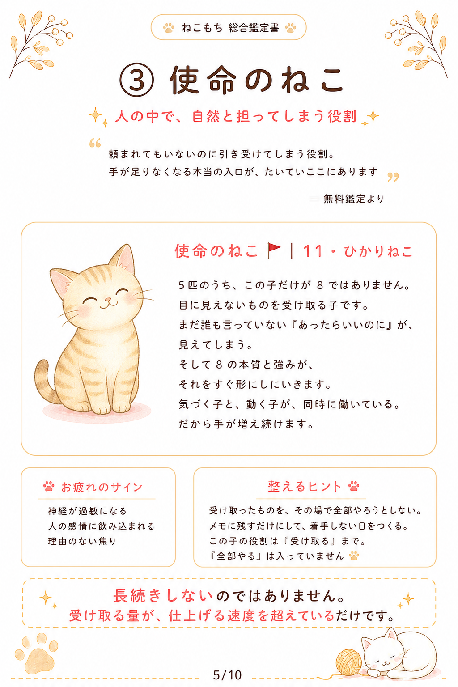
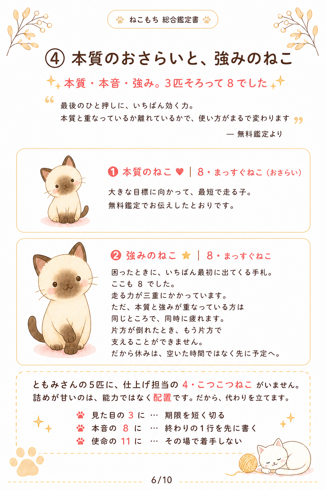
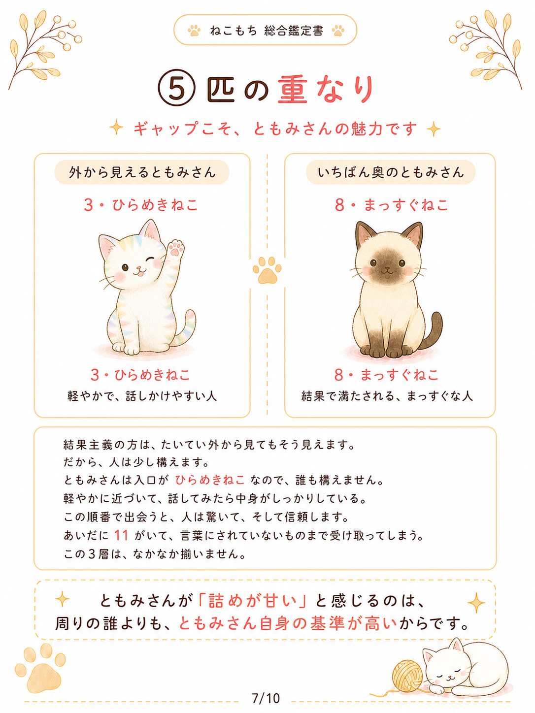
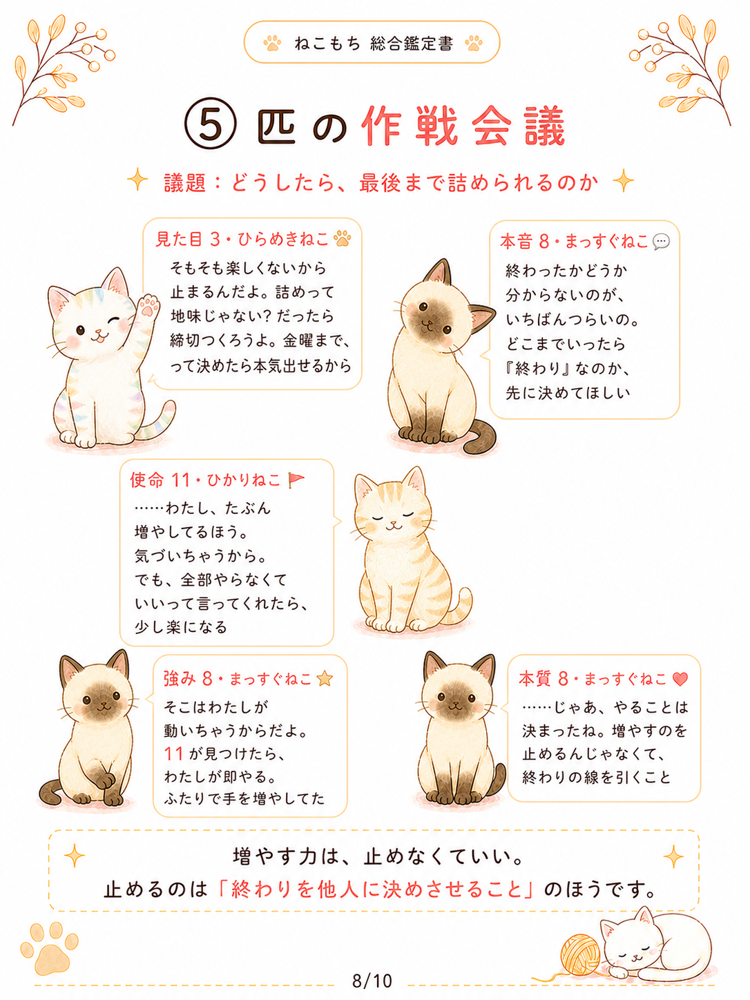
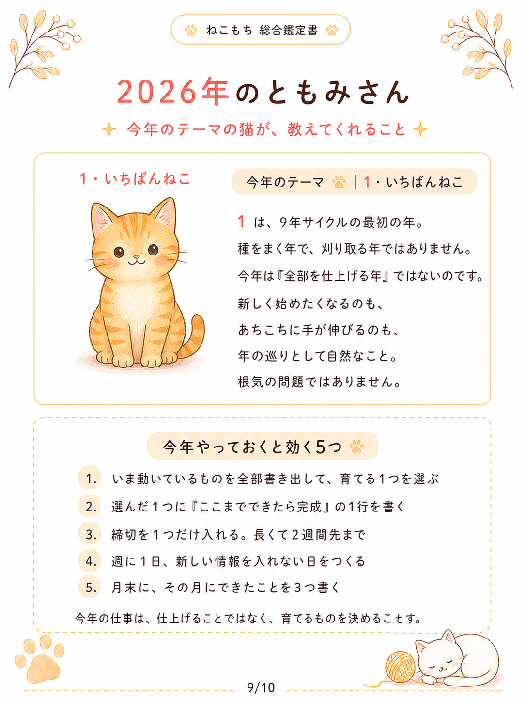
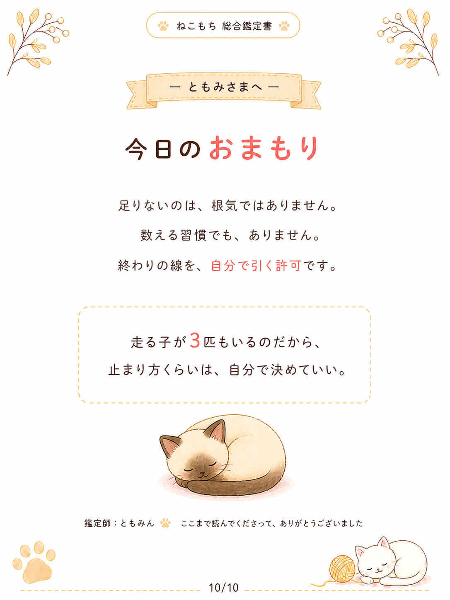

NEKOMOCHI PERSONAL BOOK
ねこもち占いの鑑定書つまずく日にも、
帰ってこられる一冊。
「なんで私は、いつも同じところで
つまずくんだろう」
そう思う日が、ときどきありませんか。
それは性格の問題ではなくて、あなたの中に住んでいる
5匹のねこの、並び方の仕組みかもしれません。
生年月日とお名前から、
あなたの中に住む5匹のねこを読み解きます。
5 CATS, YOUR STORY
あなたの中の5匹と、
あなたを知る10ページ。


何度でも、開いてほしい。
絵本のような、あなたのための鑑定書。
読んで終わりではなく、
手元に置いて、何度でも。
この鑑定書は、一度読んで終わりの結果ページではありません。
手元に置いて、何度でも開ける一冊としてお作りしています。
A4縦・全10ページ。
5匹それぞれを読み解きながら、あなたのご相談に向き合う、絵本のような鑑定書です。
INSIDE THE BOOK
5匹のねこと、10ページの中身
はじめの一言から、最後のおまもりまで。
一冊を通して、あなたらしさをひもといていきます。
ともみさんの鑑定書を、実例としてご紹介します。
画像を選ぶと、ページを拡大してお読みいただけます。
個人情報にぼかしを入れた、2026年制作の見本です。お届けする内容は、お一人ずつのご相談に合わせてお作りします。
-

01PAGE表紙と、5匹のねこの早わかり
いちばん大事な一言を、はじめにお伝えします。
-

02PAGEごあいさつ
いただいたご相談を、そのまま受け止めます。
-

03PAGE見た目のねこ
人から最初に受け取られている、あなたの印象。
-

04PAGE本音のねこ
心の奥で、本当に望んでいること。
-

05PAGE使命のねこ
人生をかけて育てていく、あなたのテーマ。
-

06PAGE本質のおさらいと、強みのねこ
困ったときに助けてくれる力。そして、5匹の配置から見えてきた結論をお伝えします。
-

07PAGE5匹の重なり
外から見える姿と、内側の気持ちの差。このギャップが、そのままご相談の答えになっていることがあります。
-

08PAGE5匹の会議
あなたの中の5匹が、いただいたご相談について話し合います。
-

09PAGE今年の運勢
今年やっておくと効く5つを、ご相談に合わせてお伝えします。
-

10PAGE今日のおまもり
読み返すたびに、戻ってきていただける場所です。
{kind=link}
{kind=link}
{kind=link}
{kind=link}
{kind=link}
{kind=link}
{kind=link}
{kind=link}
{kind=link}
{kind=link}
YOUR QUESTION
ご相談は、鑑定書全体で答えます。
お申し込みのときに「いま気になっていること」を書いていただきます。
お悩み専用のページを1枚作るのではなく、いただいたご相談に合わせて、読み解く角度そのものを決めます。
- お仕事・働き方
- お金・値付け
- 恋愛・パートナーシップ
- 人間関係
- 自分らしさ
- 子育てのなかでの
ご自身のこと
どのご相談も、この一冊でお答えしています。
FOR YOU
こんな方に、届けたい一冊です。
- 同じところで何度もつまずいている気がする
- 自分のことを、もう少し理解したい
- 手元に置いて、何度も読み返せるものがほしい
DELIVERY
お届けについて
- 形式
- PDF（A4縦・全10ページ）
- 文量
- 約4,000字
- 納期
- 必要情報を確認してから5日以内
- 配送
- データでのお渡しです。
紙の鑑定書の発送はありません。
ふたり鑑定書・家族まるごと鑑定書については、公式LINEでご相談ください。
HOW TO ORDER
ご購入後の流れ
必要な情報をお知らせください
ご購入後、メッセージまたは備考欄に、次の3つをご記入ください。
- 生年月日（西暦）
- お名前（ひらがな）
- いま気になっていること
相性鑑定・ご家族鑑定は、お相手様・ご家族様の情報もご記入ください。
お名前は、5匹のうち3匹を出すために使わせていただきます。ニックネームではなく、ご本人のお名前をひらがなでお願いします。
5日以内にPDFをお届けします
必要情報を確認してから、5日以内に鑑定書のPDFをお届けします。手元に置いて、気になったときに何度でも開いてくださいね。

A BOOK FOR YOURSELF
あなたの5匹に、会いにきてください。
お申し込みはSTORESから。
ご相談や、ふたり・家族の鑑定のお問い合わせは公式LINEで承ります。
価格・ご購入については、販売ページでご確認いただけます。